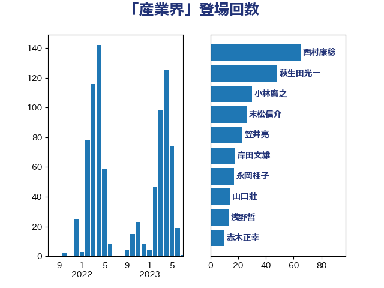

単語「産業界」

| 西村康稔 | 自由民主党 | 65 回 |
| 萩生田光一 | 自由民主党 | 48 回 |
| 小林鷹之 | 自由民主党 | 30 回 |
| 末松信介 | 自由民主党 | 26 回 |
| 笠井亮 | 日本共産党 | 23 回 |
| 岸田文雄 | 自由民主党 | 18 回 |
| 永岡桂子 | 自由民主党 | 17 回 |
| 山口壯 | 自由民主党 | 14 回 |
| 浅野哲 | 国民民主党 | 13 回 |
| 赤木正幸 | 日本維新の会 | 10 回 |
| 鈴木義弘 | 国民民主党 | 9 回 |
| 山岡達丸 | 立憲民主党 | 9 回 |
| 細田健一 | 自由民主党 | 8 回 |
| 浜口誠 | 国民民主党 | 7 回 |
| 山口晋 | 自由民主党 | 7 回 |
| 村田享子 | 立憲民主党 | 6 回 |
| 斉藤鉄夫 | 公明党 | 6 回 |
| 小野泰輔 | 日本維新の会 | 6 回 |
| 大島敦 | 立憲民主党 | 6 回 |
| 足立康史 | 日本維新の会 | 5 回 |
| 礒崎哲史 | 国民民主党 | 5 回 |
| 河野義博 | 公明党 | 5 回 |
| 岩渕友 | 日本共産党 | 5 回 |
| 太田房江 | 自由民主党 | 5 回 |
| 鈴木俊一 | 自由民主党 | 4 回 |
| 西村明宏 | 自由民主党 | 4 回 |
| 田島麻衣子 | 立憲民主党 | 4 回 |
| 熊谷裕人 | 立憲民主党 | 4 回 |
| 浜野喜史 | 国民民主党 | 4 回 |
| 浜田靖一 | 自由民主党 | 4 回 |
| 本田顕子 | 自由民主党 | 4 回 |
| 日下正喜 | 公明党 | 4 回 |
| 後藤茂之 | 自由民主党 | 4 回 |
| 岩田和親 | 自由民主党 | 4 回 |
| 岡田直樹 | 自由民主党 | 4 回 |
| 務台俊介 | 自由民主党 | 4 回 |
| 加藤勝信 | 自由民主党 | 4 回 |
| 上野通子 | 自由民主党 | 4 回 |
| ながえ孝子 | 無所属 | 4 回 |
| 里見隆治 | 公明党 | 3 回 |
| 西岡秀子 | 国民民主党 | 3 回 |
| 空本誠喜 | 日本維新の会 | 3 回 |
| 福島みずほ | 社会民主党 | 3 回 |
| 石井正弘 | 自由民主党 | 3 回 |
| 矢倉克夫 | 公明党 | 3 回 |
| 田嶋要 | 立憲民主党 | 3 回 |
| 有村治子 | 自由民主党 | 3 回 |
| 工藤彰三 | 自由民主党 | 3 回 |
| 高市早苗 | 自由民主党 | 2 回 |
| 重徳和彦 | 立憲民主党 | 2 回 |
| 西銘恒三郎 | 自由民主党 | 2 回 |
| 茂木敏充 | 自由民主党 | 2 回 |
| 若宮健嗣 | 自由民主党 | 2 回 |
| 篠原孝 | 立憲民主党 | 2 回 |
| 石川博崇 | 公明党 | 2 回 |
| 石井拓 | 自由民主党 | 2 回 |
| 田中健 | 国民民主党 | 2 回 |
| 猪瀬直樹 | 日本維新の会 | 2 回 |
| 牧島かれん | 自由民主党 | 2 回 |
| 漆間譲司 | 日本維新の会 | 2 回 |
| 沢田良 | 日本維新の会 | 2 回 |
| 榛葉賀津也 | 国民民主党 | 2 回 |
| 森山浩行 | 立憲民主党 | 2 回 |
| 梅谷守 | 立憲民主党 | 2 回 |
| 平山佐知子 | 無所属 | 2 回 |
| 山谷えり子 | 自由民主党 | 2 回 |
| 山崎誠 | 立憲民主党 | 2 回 |
| 宮本岳志 | 日本共産党 | 2 回 |
| 大野敬太郎 | 自由民主党 | 2 回 |
| 塩崎彰久 | 自由民主党 | 2 回 |
| 堤かなめ | 立憲民主党 | 2 回 |
| 吉田はるみ | 立憲民主党 | 2 回 |
| 伊藤岳 | 日本共産党 | 2 回 |
| 井上哲士 | 日本共産党 | 2 回 |
| 中川正春 | 立憲民主党 | 2 回 |
| 中川康洋 | 公明党 | 2 回 |
| 齋藤健 | 自由民主党 | 1 回 |
| 高階恵美子 | 自由民主党 | 1 回 |
| 高橋克法 | 自由民主党 | 1 回 |
| 青木愛 | 立憲民主党 | 1 回 |
| 長友慎治 | 国民民主党 | 1 回 |
| 鈴木隼人 | 自由民主党 | 1 回 |
| 鈴木淳司 | 自由民主党 | 1 回 |
| 金村龍那 | 日本維新の会 | 1 回 |
| 金子道仁 | 日本維新の会 | 1 回 |
| 野田国義 | 立憲民主党 | 1 回 |
| 野中厚 | 自由民主党 | 1 回 |
| 足立敏之 | 自由民主党 | 1 回 |
| 赤羽一嘉 | 公明党 | 1 回 |
| 西田昭二 | 自由民主党 | 1 回 |
| 藤丸敏 | 自由民主党 | 1 回 |
| 落合貴之 | 立憲民主党 | 1 回 |
| 若松謙維 | 公明党 | 1 回 |
| 芳賀道也 | 国民民主党 | 1 回 |
| 舞立昇治 | 自由民主党 | 1 回 |
| 簗和生 | 自由民主党 | 1 回 |
| 福島伸享 | 無所属 | 1 回 |
| 田村まみ | 国民民主党 | 1 回 |
| 湯原俊二 | 立憲民主党 | 1 回 |
| 渡辺博道 | 自由民主党 | 1 回 |
| 浮島智子 | 公明党 | 1 回 |
| 池田佳隆 | 自由民主党 | 1 回 |
| 水野素子 | 立憲民主党 | 1 回 |
| 武部新 | 自由民主党 | 1 回 |
| 森屋宏 | 自由民主党 | 1 回 |
| 根本幸典 | 自由民主党 | 1 回 |
| 杉尾秀哉 | 立憲民主党 | 1 回 |
| 本村伸子 | 日本共産党 | 1 回 |
| 木原誠二 | 自由民主党 | 1 回 |
| 新妻秀規 | 公明党 | 1 回 |
| 平林晃 | 公明党 | 1 回 |
| 川田龍平 | 立憲民主党 | 1 回 |
| 岸真紀子 | 立憲民主党 | 1 回 |
| 岩屋毅 | 自由民主党 | 1 回 |
| 小林史明 | 自由民主党 | 1 回 |
| 小林一大 | 自由民主党 | 1 回 |
| 宮本徹 | 日本共産党 | 1 回 |
| 宮崎勝 | 公明党 | 1 回 |
| 大岡敏孝 | 自由民主党 | 1 回 |
| 大串正樹 | 自由民主党 | 1 回 |
| 塩田博昭 | 公明党 | 1 回 |
| 堂故茂 | 自由民主党 | 1 回 |
| 土田慎 | 自由民主党 | 1 回 |
| 和田有一朗 | 日本維新の会 | 1 回 |
| 吉良よし子 | 日本共産党 | 1 回 |
| 吉田久美子 | 公明党 | 1 回 |
| 吉川ゆうみ | 自由民主党 | 1 回 |
| 八木哲也 | 自由民主党 | 1 回 |
| 住吉寛紀 | 日本維新の会 | 1 回 |
| 井野俊郎 | 自由民主党 | 1 回 |
| 井林辰憲 | 自由民主党 | 1 回 |
| 井原巧 | 自由民主党 | 1 回 |
| 丹羽秀樹 | 自由民主党 | 1 回 |
| 中谷真一 | 自由民主党 | 1 回 |
| 中西祐介 | 自由民主党 | 1 回 |
| 中条きよし | 日本維新の会 | 1 回 |
| 中川貴元 | 自由民主党 | 1 回 |
| 中川宏昌 | 公明党 | 1 回 |
| 一谷勇一郎 | 日本維新の会 | 1 回 |